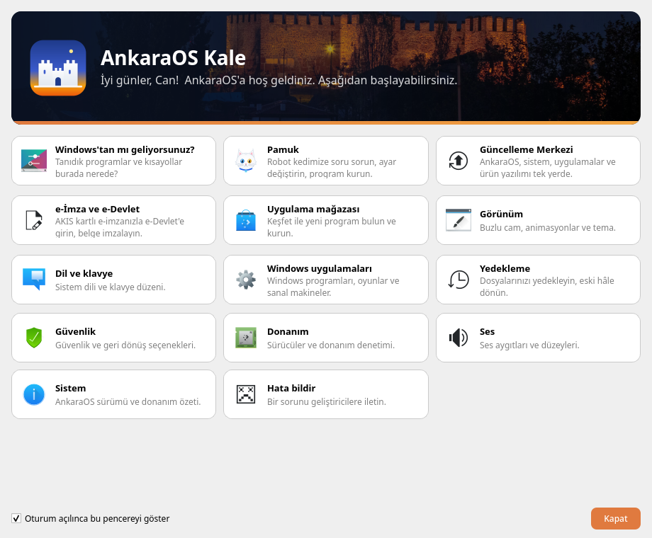
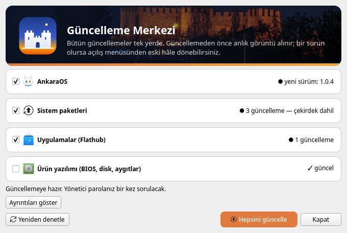
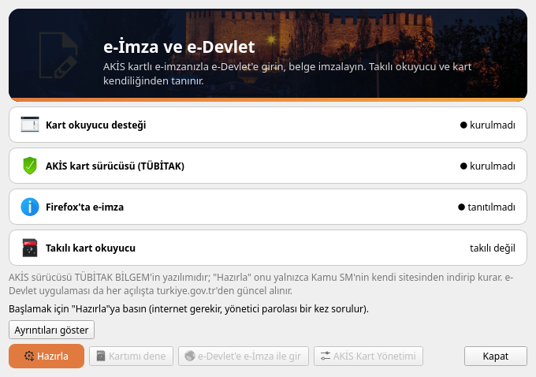
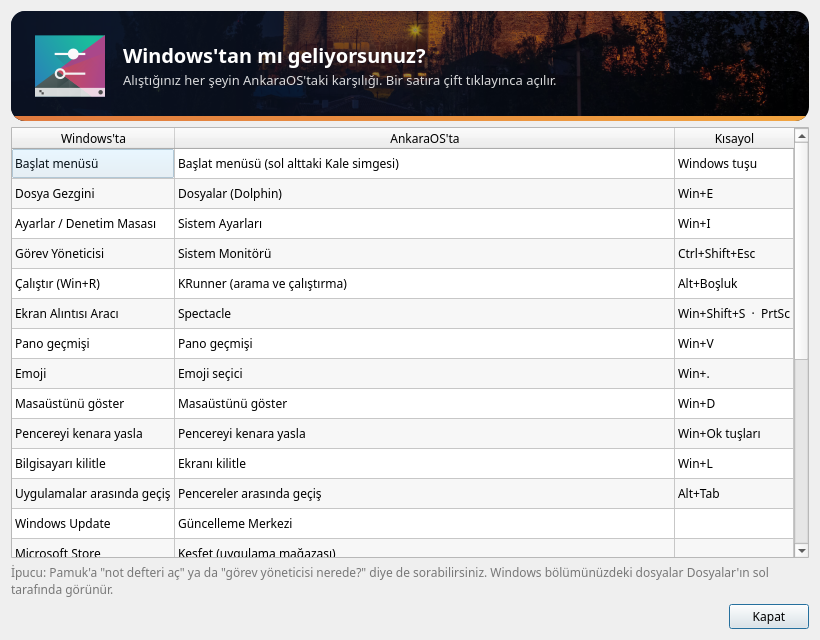

Türkçe ve yardımcı Turkish and helpful
Kartlı AnkaraOS Merkezi, Türkçe arayüz ve kurucu; bilgisayarınızda çalışan yapay zeka yardımcısı Pamuk soru cevaplar, ayar değiştirir, program kurar. Verileriniz bilgisayardan çıkmaz.
Arch Linux tabanlı, KDE Plasma masaüstlü Türkçe Linux dağıtımı. Windows'tan geçenlere tanıdık, e-İmza ve
e-Devlet'e hazır; içinde bilgisayarınızda çalışan yapay zeka yardımcısı Pamuk var.
A Turkish Linux distribution based on Arch Linux with KDE Plasma.
Sürüm 1.0.9 · 2026-10-22 · Ücretsiz ve özgür (GPL-3.0) · GitHub · Sorun bildir

Kartlı AnkaraOS Merkezi, Türkçe arayüz ve kurucu; bilgisayarınızda çalışan yapay zeka yardımcısı Pamuk soru cevaplar, ayar değiştirir, program kurar. Verileriniz bilgisayardan çıkmaz.

AnkaraOS, sistem paketleri, Flathub uygulamaları ve ürün yazılımı tek pencerede; her güncellemeden önce anlık görüntü, bozulursa açılış menüsünden geri dönüş.

AKİS kartlı e-imza tek düğmeyle hazırlanır; e-Devlet'e e-İmza ile giriş aynı pencereden.

"Windows'tan mı geliyorsunuz?" rehberi; Win+E, Win+R, Ctrl+Shift+Esc gibi tanıdık kısayollar; Word, Excel ve PowerPoint biçiminde kaydeden LibreOffice; Windows programları için Wine.
| En az | Önerilen | |
|---|---|---|
| İşlemci | 64 bit, UEFI | 4 çekirdek |
| Bellek | 4 GB | 8 GB+ (Pamuk'un büyük modeli için) |
| Disk | 40 GB | 100 GB, SSD |
| USB bellek | 8 GB (hafif ISO) | 16 GB (tam ISO) |
Tam sürüm — Pamuk'un büyük modeli (Gemma 4 E4B) içinde, kurulumda indirme yok
Full — Pamuk's large model (Gemma 4 E4B) included, no download during setup
41ff74547d9584a8c32dc1a485e5935c37a2b84ea7add50081bd47637ee0c231Hafif sürüm — 8 GB'lık USB belleğe sığar; Pamuk'un büyük modeli kurulumdan sonra indirilir
Lite — fits on an 8 GB USB stick; Pamuk's large model is downloaded after installation
137439874f1e1fe53cbe066596a944e2c5b281352569b75cf30ed618e0e39e05İndirdiğiniz dosyanın bozulmadığını ve AnkaraOS'tan geldiğini denetleyin. Sürüm anahtarı parmak izi:
D5FECBD6330A7272030AEC0AB361BC62E6D61226
gpg --import ankaraos-release-key.asc gpg --verify <ISO>.sig <ISO> sha256sum -c SHA256SUMS --ignore-missing
ankaraos-release-key.asc · SHA256SUMS · SHA256SUMS.asc
AnkaraOS yeni sürümü kendisi bildirir: Başlat menüsü > Güncelleme Merkezi. Elle:
ankaraos-update-1.0.9.tar.zst + .sig indirip
ankaraos-self-update ankaraos-update-1.0.9.tar.zst
Bu test sürümleri artık kapalı olan eski güncelleme adresine bakıyor ve yeni sürümü kendiliğinden bulamıyor.
Bir kez Konsole'da şunu çalıştırın (yönetici parolanız sorulur); sonraki güncellemeler yine kendiliğinden gelir:
These test releases look at an old update address that no longer exists. Run this once in Konsole (your
administrator password is asked); later updates arrive automatically again:
echo https://canabanoz06.github.io/ankaraos/ | sudo tee /etc/ankaraos/release-url sudo ankaraos-release-check --install